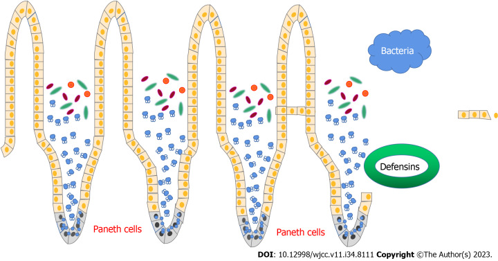

Research Statement

Through developing microbial co-culture organoid models of the intestinal mucosa, I aim to contribute to the scientific understanding of mucosal cells and microbial dysregulations that directly promote IBD pathogenesis. My future research interest is focused on investigating how Paneth cell dysfunction and subsequent microbial overgrowth can be regulated to improve IBD treatment from current immunosuppressive medications to therapeutics that target the cellular origin of disease.
Zhou, Q. M., & Zheng, L. (2023). Research progress on the relationship between Paneth cells-susceptibility genes, intestinal microecology and inflammatory bowel disease. World journal of clinical cases, 11(34), 8111–8125. https://doi.org/10.12998/wjcc.v11.i34.8111